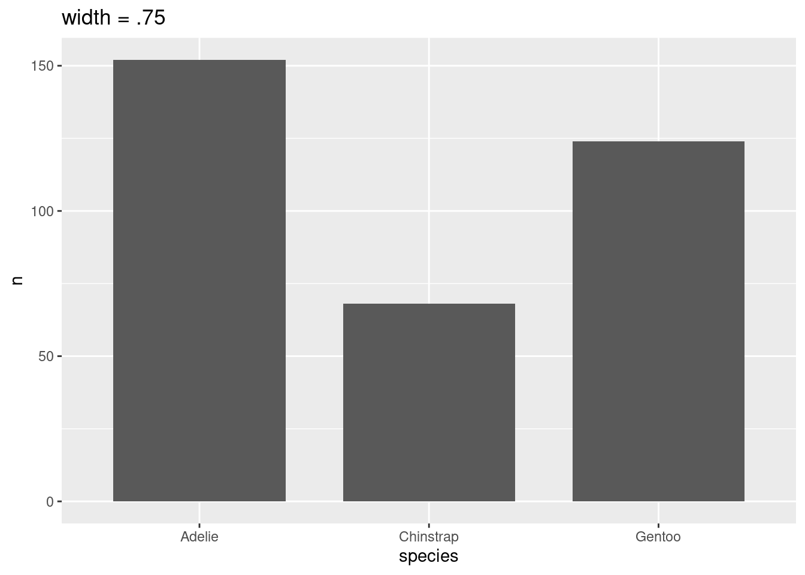

Capítulo 13 Visualização de dados geográficos
13.1 Dados geográficos no R
Nesta seção, iremos fazer uma breve introdução aos principais conceitos de dados geográficos: formatos (vetor e raster), importar e manipular e exportar esses formatos de dados, escalas de representação dos dados, sistemas de referências de coordenadas e unidades. Também iremos fazer algumas operações espaciais direcionadas à preparação de dados para compor variáveis preditoras (temperatura, precipitação e altitude) e como reunir informações sobre a biodiverisdade para unidades espaciais (quadrículas e hexágonos), e ainda como fazer a visualização desses dados através de mapas, ressaltando seus principais elementes (legenda, gride de coordenadas, escala e norte).
Esse capítulo possui diversas operações e segue parte da estrutura organizada por Lovelace, Nowosad & Muenchow (2019), principalmente nos capítulos 2, 3, 4, 5, 6, 7 e 8.
Todas essas operações serão realizadas através dos pacotes: sf (Pebesma 2018) para dados vetoriais, raster (Hijmans 2020) para dados raster, spData (Bivand, Nowosad & Lovelace 2020)), rnaturalearth (South 2017) e geobr (Pereira & Goncalves 2020) para baixar dados vetoriais, e ggplot2 (Wickham 2016), ggspatial (Dunnington 2020), tmap (Tennekes 2018) e viridis (Garnier 2018) para visualização e composição de mapas.
install.packages("sf")
install.packages("raster")
install.packages("spData")
install.packages("rnaturalearth")
install.packages("geobr")
install.packages("ggplot2")
install.packages("ggspatial")
install.packages("tmap")IMPORTANTE: Se você estiver utilizando MacOS ou Linux, a instalação dos pacotes listados pode não funcionar. Esses sistemas operacionais (SOs) possuem “requisitos específicos do sistema” que são geralmente descritos no READMEs dos pacotes no GitHub. Entretanto, há várias instruções específicas que podem ser encontradas online.
13.1.1 Vetor
Dados vetoriais representam informações geográficas acuradas através de pontos, linhas e polígonos (Figura 11.1). Cada uma dessas geometrias são indicadas para representar feições e/ou eventos específicos, como veremos adiante.
Figure 13.1: Ilustração das geometrias de pontos, linhas e polígonos. Adaptado de: Lovelace, Nowosad & Muenchow (2019).
13.1.1.1 Pontos
Os pontos são geometrias geralmente utilizados para representar eventos pontuias unitários como ocorrência de espécies, locais de coleta, pontos de GPS ou nascentes de rios. Esses dados são representados por um vértice, ou seja, um par de coordenadas (longitude - X e latitude - Y), que são plotados na forma de cículos ou outro elemento que represente o evento em questão. Dessa forma, geralmente utilizamos dados tabulares com pelo menos duas colunas contendo essas coordenadas. Além disso, esses dados tabulares podem conter outras colunas com informações quantitativas ou qualitativas como número de espécies, temperatura, precipitação ou ainda categorias como tipo de habitat, que podemos representar nos pontos através de diferentes formatos, tamanhos ou cores desse pontos (Figura 11.2).
| id | longitude | latitude | numero_especies | temperatura | precipitacao | habitat |
|---|---|---|---|---|---|---|
| 1 | 0 | 2 | 2 | 20 | 1000 | floresta |
| 2 | 1 | 5 | 3 | 22 | 1100 | pastagem |
| 3 | 2 | 3 | 3 | 28 | 1300 | floresta |
| 4 | 5 | 4 | 2 | 23 | 1200 | floresta |
| 5 | 5 | 1 | 5 | 25 | 1450 | pastagem |
Figure 13.2: Geometrias de pontos e suas identificações com a tabela de dados.
13.1.1.2 Linhas
As linhas representam geometrias lineares como estradas, rios, trajetos, divisões ou distâncias. Geralmente as linhas são criadas em softwares de Sistema de Informações Geográficas (SIG) como o QGIS e depois importadas para o R. As linhas são representadas por no mínimo dois vértices conectados, i.e., dois pares de coordenadas, gerando uma geometria aberta, possuindo como característica o comprimento. Da mesma forma que os pontos, as linhas podem ter informações tabulares sendo quantitativas como comprimento dessa feição de linha ou ainda informações qualitativas como o nome de estradas ou vazão dos rios, que podem ser utilizadas para alterar o formato, tamanho ou cor dessas linhas (Figura 11.3).
| id | rodovias | comprimento_km |
|---|---|---|
| 1 | rodovia_01 | 12 |
| 2 | rodovia_02 | 52 |
| 3 | rodovia_03 | 5 |
| 4 | rodovia_04 | 38 |
| 5 | rodovia_05 | 18 |

Figure 13.3: Geometrias de linhas e suas identificações com a tabela de dados.
13.1.1.3 Polígonos
Por fim, polígonos representam geometrias fechadas, como fragmentos de vegetação, lagos ou limites geográficos, sendo mais voltado principalmente para representar feições de um mapa de uso e cobertura da terra ou limites geográficos naturais, políticos, administrativos ou regulares. Os polígonos também são criados geralmente em softwares específicos de SIG e depois importados para o R. Os polígonos são representados por no mínimo três vértices conectados, sendo que o primeiro vértice possui coordenadas idênticas ao último, de modo que essa ligação gere uma feição fechada, com características como perímetro e área. Da mesma forma que os pontos e linhas, outras colunas podem ser associadas aos polígonos para representar informações quantitativas como perímetro e área dessa polígono, ou ainda informações qualitativas como a classe de uso da terra, que podem ser utilizadas para alterar formatos, tamanho ou cores dos polígonos (Figura 11.3).
| id | uso | area_ha | perimeto_m |
|---|---|---|---|
| 1 | floresta | 50 | 700 |
| 2 | urbano | 22 | 300 |
| 3 | pastagem | 30 | 250 |
| 4 | agua | 25 | 400 |
| 5 | cerrado | 40 | 500 |

Figure 13.4: Geometrias de polígonos e suas identificações com a tabela de dados.
Além disso, geralmente utilizamos polígono regulares (buffers, quadrículas ou hexágonos) para sintetizar informações de biodiversidade ou de variáveis preditoras, que podem ser utilizadas como unidades amostrais em análises espaciais, principalmente nas áreas de Ecologia da Paisagem, Biogeografia e Macroecologia (Figura 11.4).
| id | numero_especies | temperatura | precipitacao |
|---|---|---|---|
| 1 | 2 | 20 | 1000 |
| 2 | 3 | 22 | 1100 |
| 3 | 3 | 28 | 1300 |
| 4 | 2 | 23 | 1200 |
| 5 | 5 | 25 | 1450 |
| … | … | … | … |
Figure 13.5: Polígonos regulares: buffers, quadrículas e hexágonos.
13.1.1.4 Tabela de atributos
Para os dados vetoriais é necessário ainda destacar um elemento fundamental: a tabela de atributos. A tabela de atributos é uma tabela que inclui dados geográficos e dados alfanuméricos. Os dados geográficos são representados por cada feição geolocalizada espacialmente (ponto, linha ou polígono) e os dados alfanuméricos são todos os demais dados assossiados à cada uma dessas feições (Figuras 11.2, 11.3, 11.4, 11.5).
Dessa forma, essa a tabela de atributos reúne informações sobre cada feição e pode ser utilizada para a realização de filtros ou agregações dos dados de cada feição. É nessa tabela que ainda podemos concatenar novas informações (colunas da tabela) de operações com as feições (linhas da tabela) como cálculo de comprimento, perímetro, área ou ainda outras operações com as colunas, resultando em outras colunas.
13.1.1.5 sf: principal pacote no R para dados vetoriais
Atualmente o principal pacote para trabalhar com dados vetoriais é o sf, que implementou o Simple Feature no R (Pebesma 2018).
Esse pacote facilitou muito a forma de trabalho de vetores no R, sendo que as principais vantagens são (Lovelace, Nowosad & Muenchow 2019):
- rápida leitura e gravação de dados
- aprimorado desempenho de plotagem
- objetos
sfpodem ser tratados como data frames na maioria das operações - funções
sfpodem ser combinadas usando o operador%>%e funcionam no formato tidyverse - funções
sfsão consistentes e intuitivas (sempre começam comst_)
Os tipos de geometrias apresentadas são representadas por diferentes classes: POINT, LINESTRING e POLYGON para apenas uma feição de cada tipo de geometria; MULTIPOINT, MULTILINESTRING e MULTIPOLYGON para várias feições de cada tipo de geometria e; GEOMETRYCOLLECTION para várias feições e tipos de geometrias (Figura 11.6).

Figure 13.6: Tipos de classes suportadas pelo sf. Fonte: Lovelace, Nowosad & Muenchow (2019).
Ao olharmos as informações de um objeto da classe sf, podemos notar diversas informações que descrevem o mesmo:
- resumo do vetor: indica o número de feições (linhas) e campos (colunas)
- tipo da geometria: umas das sete classes listadas anteriormente
- dimensão: número de dimensões, geralmente duas (XY)
- bbox (bordas): coordenadas mínimas e máximas da longitude e latitude
- informação do CRS: epsg (SRID) ou proj4strixng indicanso o Sistema de Referência de coordenadas
- tibble: indica a tabela de atributos, com destaque para a coluna
geomque representa cada feição ou geometria
## Simple feature collection with 177 features and 10 fields
## geometry type: MULTIPOLYGON
## dimension: XY
## bbox: xmin: -180 ymin: -90 xmax: 180 ymax: 83.64513
## geographic CRS: WGS 84
## # A tibble: 177 x 11
## iso_a2 name_long continent region_un subregion type area_km2 pop lifeExp
## <chr> <chr> <chr> <chr> <chr> <chr> <dbl> <dbl> <dbl>
## 1 FJ Fiji Oceania Oceania Melanesia Sove… 1.93e4 8.86e5 70.0
## 2 TZ Tanzania Africa Africa Eastern … Sove… 9.33e5 5.22e7 64.2
## 3 EH Western … Africa Africa Northern… Inde… 9.63e4 NA NA
## 4 CA Canada North Am… Americas Northern… Sove… 1.00e7 3.55e7 82.0
## 5 US United S… North Am… Americas Northern… Coun… 9.51e6 3.19e8 78.8
## 6 KZ Kazakhst… Asia Asia Central … Sove… 2.73e6 1.73e7 71.6
## 7 UZ Uzbekist… Asia Asia Central … Sove… 4.61e5 3.08e7 71.0
## 8 PG Papua Ne… Oceania Oceania Melanesia Sove… 4.65e5 7.76e6 65.2
## 9 ID Indonesia Asia Asia South-Ea… Sove… 1.82e6 2.55e8 68.9
## 10 AR Argentina South Am… Americas South Am… Sove… 2.78e6 4.30e7 76.3
## # … with 167 more rows, and 2 more variables: gdpPercap <dbl>,
## # geom <MULTIPOLYGON [°]>Podemos facilmente fazer um mapa simples utilizando a função plot() desse objeto. Para facilitar, escolheremos apenas uma coluna.

13.1.2 Raster
Os dados no formato raster consistem em uma matriz (com linhas e colunas) representando células igualmente espaçadas (pixels; Figura 11.7). Esse formato de dado torna a álgebra e o processamento de mapas muito mais eficiente e rápido do que o processamento de dados vetoriais. Para as células dos dados raster possuímos duas informações: 1. a identificação das células (IDs das células) para especificar sua posição na matriz (Figura 11.7 A) e; 2. os valores das células (Figura 11.7 B), que geralmente são coloridos para facilitar a interpretação da variação dos valores no espaço (Figura 11.7 C). Além disso, valores ausentes ou não amostrados são representados por NA, ou seja, not available (Figura 11.7 B e C).

Figure 13.7: Raster: (A) IDs das células, (B) valores das células, (C) células coloridas. Adaptado de: Lovelace, Nowosad & Muenchow (2019).
13.1.2.1 Raster contínuo e categórico
A célula ou pixel de um raster pode conter apenas um único valor, que pode ser contínuo ou categórico (Figura 11.8). O formato raster geralmente representa fenômenos contínuos, como elevação, precipitação, temperatura, ou dados espectrais de imagens de satélite, mas também pode representar categorias como classes de solo ou cobertura da terra (Figura 11.8).

Figure 13.8: Raster: (A) mapa contínuo, (B) mapa categórico. Adaptado de: Lovelace, Nowosad & Muenchow (2019).
13.1.2.2 raster: principal pacote no R para dados raster
Atualmente o principal pacote para trabalhar com dados raster é o raster (Hijmans 2020). Ele fornece uma ampla gama de funções para criar, ler, exportar, manipular e processar dados raster no R. Os rasters dentro do R podem possuir três classes: RasterLayer, RasterStack e RasterBrick.
A classe RasterLayer representa apenas uma camada raster. Para criar um raster no R podemos utilizar a função raster(). Observando essa classe, podemos notar as seguintes informações:
- class: classe raster do objeto
- dimensions: número de linhas, colunas e células
- resolution: largura e altura da célula
- extent: coordenadas mínimas e máximas da longitude e latitude
- crs: Sistema de Referência de Coordenadas
- source: fonte dos dados (memória ou disco)
- names: nome das camadas
- values: valores máximos e mínimos das células
library(raster)
raster_layer <- raster::raster(nrows = 5, ncols = 5,
res = .5,
xmn = -61.5, xmx = -59, ymn = -14.5, ymx = -12,
vals = sample(1:25, 25, rep = TRUE))
raster_layer## class : RasterLayer
## dimensions : 5, 5, 25 (nrow, ncol, ncell)
## resolution : 0.5, 0.5 (x, y)
## extent : -61.5, -59, -14.5, -12 (xmin, xmax, ymin, ymax)
## crs : +proj=longlat +datum=WGS84 +no_defs
## source : memory
## names : layer
## values : 1, 24 (min, max)Um mapa simples do rater pode ser obtido utilizando a função plot() do pacote raster.

Além da classe RasterLayer, há mais duas classes que trabalham com várias camadas: RasterBrick e RasterStack. Elas diferem em relação ao número de formatos de arquivo suportados, tipo de representação interna e velocidade de processamento.
A classe RasterBrick geralmente corresponde a importação de um único arquivo de satélite multiespectral ou a um único objeto de várias camadas na memória. A função brick() cria um objeto RasterBrick.
raster_layer1 <- raster_layer
raster_layer2 <- raster_layer * raster_layer
raster_layer3 <- sqrt(raster_layer)
raster_brick <- raster::brick(raster_layer1, raster_layer2, raster_layer3)
raster_brick## class : RasterBrick
## dimensions : 5, 5, 25, 3 (nrow, ncol, ncell, nlayers)
## resolution : 0.5, 0.5 (x, y)
## extent : -61.5, -59, -14.5, -12 (xmin, xmax, ymin, ymax)
## crs : +proj=longlat +datum=WGS84 +no_defs
## source : memory
## names : layer.1, layer.2, layer.3
## min values : 1, 1, 1
## max values : 24.000000, 576.000000, 4.898979
Já a classe RasterStack permite conectar vários objetos raster armazenados em arquivos diferentes ou vários objetos na memória. Um RasterStack é uma lista de objetos RasterLayer com a mesma extensão e resolução. Uma maneira de criá-lo é com a junção de vários objetos espaciais já existentes no ambiente global do R, ou listar vários arquivos raster em um diretório armazenado no disco. A função stack() cria um objeto RasterStack.
Outra diferença é que o tempo de processamento para objetos RasterBrick geralmente é menor do que para objetos RasterStack. A decisão sobre qual classe Raster* deve ser usada depende principalmente do caráter dos dados de entrada.
raster_layer1 <- raster_layer
raster_layer2 <- raster_layer * raster_layer
raster_layer3 <- sqrt(raster_layer)
raster_stack <- raster::stack(raster_layer1, raster_layer2, raster_layer3)
raster_stack## class : RasterStack
## dimensions : 5, 5, 25, 3 (nrow, ncol, ncell, nlayers)
## resolution : 0.5, 0.5 (x, y)
## extent : -61.5, -59, -14.5, -12 (xmin, xmax, ymin, ymax)
## crs : +proj=longlat +datum=WGS84 +no_defs
## names : layer.1, layer.2, layer.3
## min values : 1, 1, 1
## max values : 24.000000, 576.000000, 4.898979
13.1.3 Sistema de Referência de Coordenadas e Unidades
13.1.3.1 Sistema de coordenadas geográficas
13.1.3.2 Sistema de coordenadas projetadas
13.1.4 Escalas de representação dos dados
13.1.4.1 Escala global
13.1.4.2 Escala regional
13.1.4.3 Escala local
13.2 Principais fontes de dados
13.2.1 Vetor
13.2.2 Raster
13.3 Importar e exportar dados geográficos
13.3.1 Importar vetor
13.3.2 Exportar vetor
13.3.3 Importar raster
13.3.4 Exportar raster
13.4 Visualização de dados geográficos - Mapas
13.4.1 graphics
13.4.2 ggplot2
13.4.3 tmap
13.4.4 Outros pacotes
13.5 Principais operações com dados geográficos
13.5.1 Operações com atributos
13.5.1.1 Vetor
13.5.1.2 Raster
13.5.2 Operações espaciais
13.5.2.1 Vetor
13.5.2.2 Raster
13.5.3 Operações geométricas
13.5.3.1 Vetor
13.5.3.2 Raster
13.5.4 Reprojeções
13.6 Download e extração de dados climáticos para pontos
Download e extração de dados climáticos de bases online (WorlClim, CHELSA, …)
13.7 Reunir informações de biodiversidade para unidades espaciais
Para se aprofundar:
Lovelace, Nowosad & Muenchow (2019) Geocomputation with R
Mas et al. (2019) Análise espacial com R
Pebesma & Bivand (2020) Spatial Data Science. Link: https://keen-swartz-3146c4.netlify.app/
Brunsdon & Comber (2018) An Introduction to R for Spatial Analysis and Mapping
Wegmann, Leutner & Dech (2016) Remote Sensing and GIS for Ecologists: Using Open Source Software
Wegmann, Schwalb-Willmann & Dech (2020) An Introduction to Spatial Data Analysis Remote Sensing and GIS with Open Source Software.